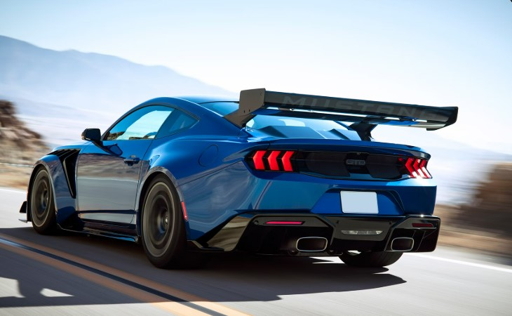
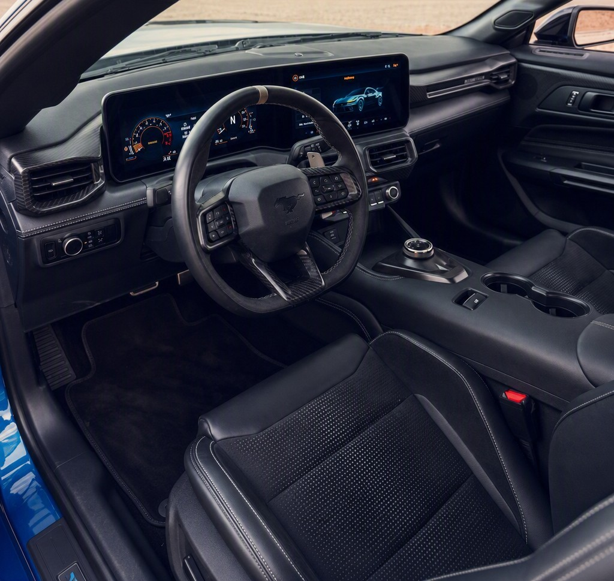

Exterior Design

The Mustang GTD has an aggressive exterior that is centered around aerodynamics and performance. Aerodynamic bodywork, wide stance and large air openings gives the GTD a look that makes it stand out from the standard Mustang.
Lightweight materials are used throughout the vehicle. The sculpted body allows for a good airflow around the car while the GTD is given an unmistakable track-inspired appearance.
Exterior Highlights
- Wide performance-focused stance
- Large rear wing
- Carbon-fiber components
- Track-inspired airflow and cooling
- Aerodynamic body design
Interior Design

Inside, the Mustang GTD continues on with its performance-focused approach. The cockpit has important controls that are in the drivers reach while still keeping the recognizable character of a modern Mustang.
Digital displays, performance seating, premium materials, and race-inspired details makes up for an interior that coinsides modern technology with the GTD's track-focused personality.
View Specifications